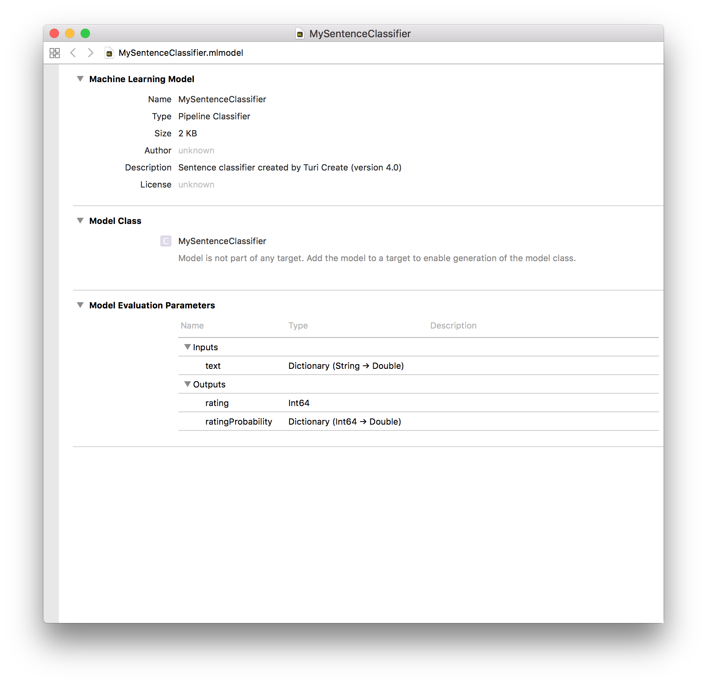

Text classification
Text classification - commonly used in tasks such as sentiment analysis - refers to the use of natural language processing (NLP) techniques to extract subjective information such as the polarity of the text, e.g., whether or not the author is speaking positively or negatively about some topic.
In many cases, it can help keep a pulse on users' needs and adapt products and services accordingly. Many applications exist for this type of analysis:
- Forum data: Find out how people feel about various products and features.
- Restaurant and movie reviews: What are people raving about? What do people hate?
- Social media: What is the sentiment about a hashtag, e.g. for a company, politician, etc?
- Call center transcripts: Are callers praising or complaining about particular topics?
In addition, text classification can also be used to identify features (or aspects) of entities that are mentioned, and then estimate the sentiment for each aspect. For example, when studying reviews about mobile phones you may be interested in how people feel about aspects such as battery life, screen resolution, size, etc.
Loading Data
The SMS Spam Collection Dataset provides more than five thousand labeled text messages.1 After downloading and decompressing the dataset, move the SMSSpamCollection file to your project directory.
Introductory Example
Let's now take a look at a simple example of sentiment analysis where the task is to predict whether it contains positive or negative sentiment. For instance, the model will predict "positive sentiment" for a snippet of text -- whether it is a text message, movie review or a tweet -- when it contains words like "awesome" and "fantastic". Likewise, having many words with a negative connotation will yield a prediction of "negative sentiment".
import turicreate as tc
# Only load the first two columns from csv
data = tc.SFrame.read_csv('SMSSpamCollection', header=False, delimiter='\t', quote_char='\0')
# Rename the columns
data = data.rename({'X1': 'label', 'X2': 'text'})
# Split the data into training and testing
training_data, test_data = data.random_split(0.8)
# Create a model using higher max_iterations than default
model = tc.text_classifier.create(training_data, 'label', features=['text'], max_iterations=100)
# Save predictions to an SArray
predictions = model.predict(test_data)
# Make evaluation the model
metrics = model.evaluate(test_data)
print(metrics['accuracy'])
# Save the model for later use in Turi Create
model.save('MyTextMessageClassifier.model')
# Export for use in Core ML
model.export_coreml('MyTextMessageClassifier.mlmodel')How it works
Training a text classifier is really important when you want to tune the model to your data set to take advantage of vocabulary that is particular to your application. The text classifier in Turi Create is currently a simple combination of two components:
- feature engineering: a bag-of-words transformation
- statistical model: a LogisticClassifier is used to classify text based on the above features
The bag-of-words and a logistic regression classifier is a very strong baseline for this particular task and works on a wide variety of datasets.
After creating the above model, you can inspect the underlying classifier model using:
classifier = model.classifierDeploying to Core ML
You can use the trained text classifier in Xcode by exporting it to Core ML. Exporting is done by:
model.export_coreml('MyTextMessageClassifier.mlmodel')Dragging the saved model into Xcode and inspecting it looks like the following: 
The model expects a bag-of-words representation of the input text. In Swift, we can use the NSLinguisticTagger to parse the input string into words and create this representation. The example below demonstrates how to use the NSLinguisticTagger, and get predictions from the exported model.
func bow(text: String) -> [String: Double] {
var bagOfWords = [String: Double]()
let tagger = NSLinguisticTagger(tagSchemes: [.tokenType], options: 0)
let range = NSRange(location: 0, length: text.utf16.count)
let options: NSLinguisticTagger.Options = [.omitPunctuation, .omitWhitespace]
tagger.string = text.lowercased()
tagger.enumerateTags(in: range, unit: .word, scheme: .tokenType, options: options) { _, tokenRange, _ in
let word = (text as NSString).substring(with: tokenRange)
if bagOfWords[word] != nil {
bagOfWords[word]! += 1
} else {
bagOfWords[word] = 1
}
}
return bagOfWords
}
let bagOfWords = bow(text: text)
let prediction = try? MySentenceClassifier().prediction(text: bagOfWords)